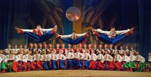

Українські танці – запальні й ліричні, нестримні й повільні, полонили весь світ. У них яскраво виявляється характер, висока й самобутня культура українського народу. Народні танці стали невід’ємною частиною художнього життя України і світової хореографії. Вони продовжують свій розвиток на сучасній сцені.
Побутові танці, до яких відносяться метелиці, гопаки, козачки, коломийки, гуцулки, кадрилі, польки, є основою української народної хореографії. Усі відомі танцювальні рухи та їх варіанти — це наслідок багатовікової народної практики в галузі мистецтва танцю. Вивчаючи технологію виконання танцювальних рухів, можна помітити, що в їх основі лежить той чи інший момент трудового процесу або якоїсь дії людини.
Одним із найдавніших танців в Україні, що здобув популярність у всьому світі, є гопак.
Танець «козак» — це боротьба характерів, відкритий вияв емоцій, змагання у силі, вправності й творчій фантазії. Цей танець є символом волі та козацької звитяги. Він увібрав у себе кращі здобутки народної хореографії.
Українські народні танці виховують у молоді високі патріотичні почуття, естетичний смак, гордість за свою націю, любов до рідного краю.